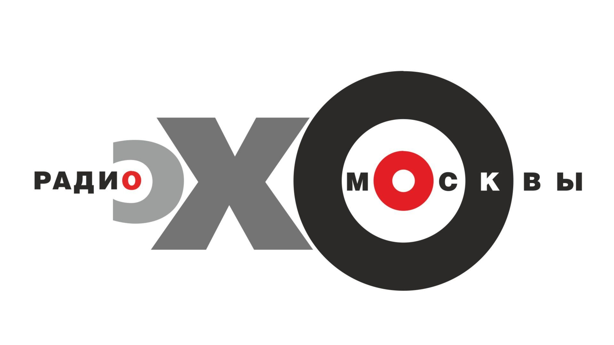
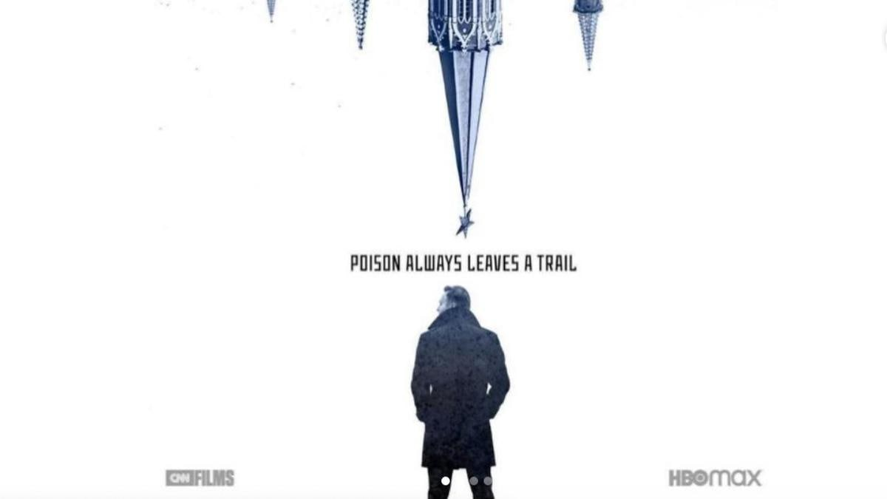
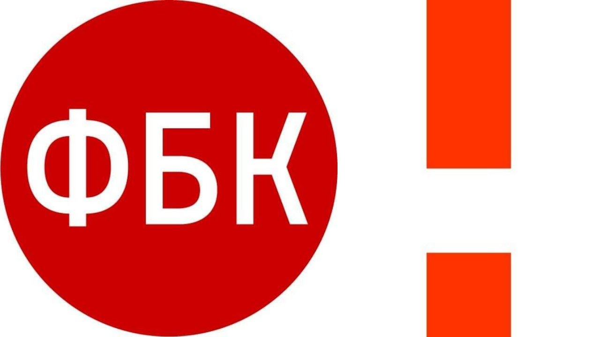
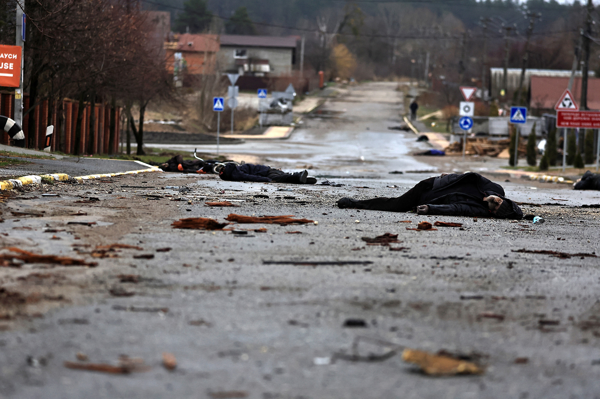
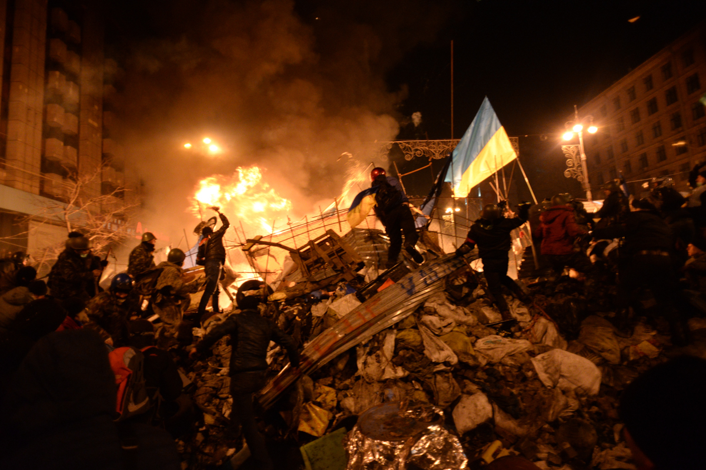
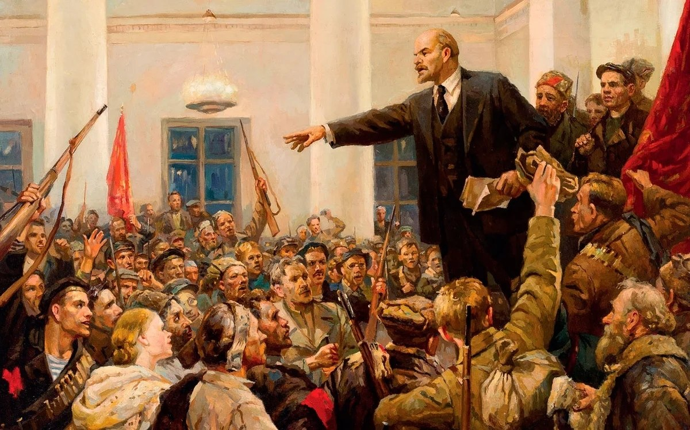
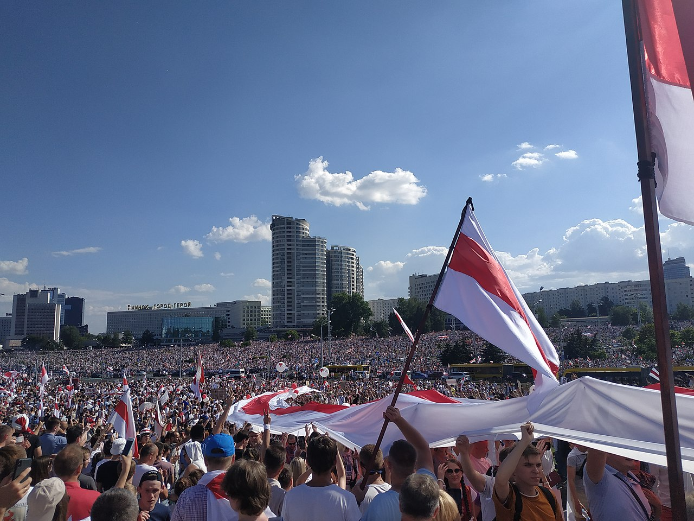
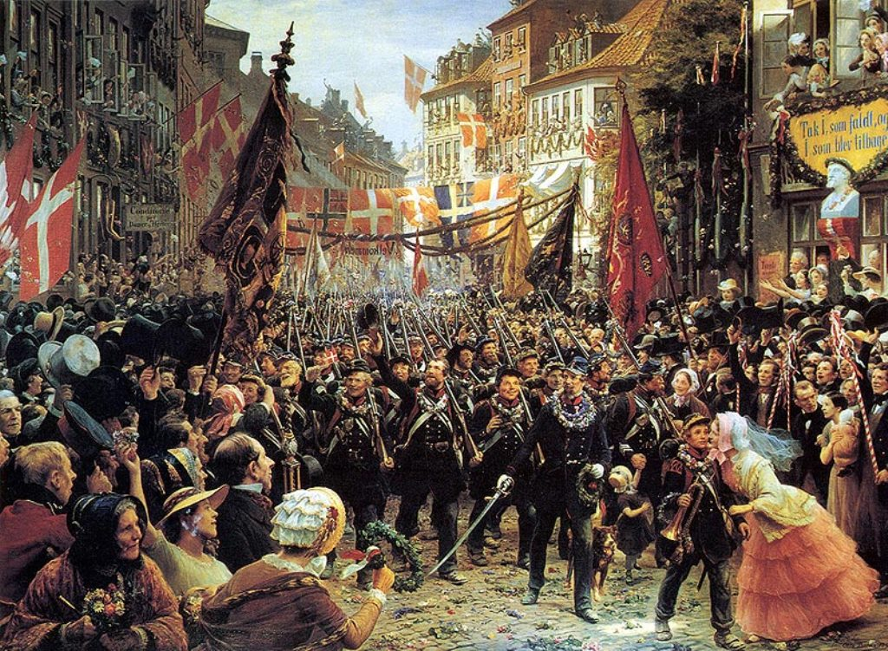
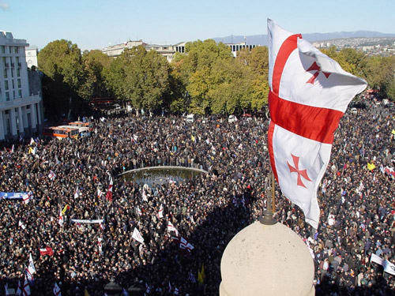
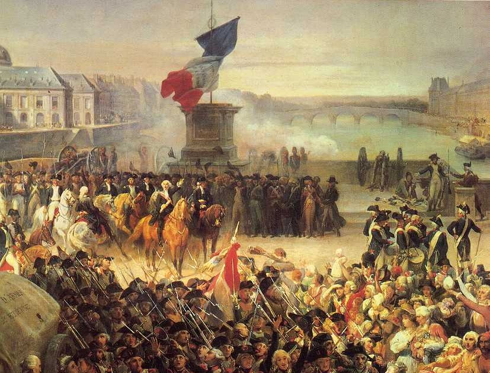

Когнитивная война – это, простыми словами, сведение с ума. Она основана на зарождении чувства избранности и радикализации отдельных групп населения и направлена на дестабилизацию общества как системы, изменение не только того, что люди думают, но и того, как они действуют. Это наиболее продвинутая на сегодняшний день форма манипулирования человеческим разумом.
Когнитивная война создает коварную проблему. У пораженного индивида разрушается обычное понимание и реакцию на события постепенно и незаметно, что со временем оказывает значительное вредное воздействие. Она питается методами дезинформации и пропаганды, направленными на психологическое истощение рецепторов информации. Какова бы ни была природа и цель войны, она всегда сводится к столкновению человеческих воль, и поэтому то, что определяет победу, – это способность навязать желаемое поведение на избранную аудиторию. Когнитивная война противостоит способности знать и производить. Она активно препятствует знанию.
Механизм когнитивной войны основан на нерациональности общества потребления. В таком обществе для человека важно “не добиться чего-либо, а купить новую машину”. Людьми превозносятся низменные ценности и игнорируются высшие. Обывателю постоянно нужно нажимать на “дофаминовую педаль” – постоянно приносить себе удовольствие.
Основу когнитивной войны составляет информация.
Человек живет в трех информационных действительностях:
1. Семья, работа
2. Традиционные медиа (Телевидение, СМИ)
3. Нетрадиционные или сетевые медиа (социальные сети, средства массовой коммуникации)
Распределите источники информации по информационным действительностям
Семья, работа
Традиционные медиа
Сетевые медиа

Если человеку поступает сигнал (определенная информация, новость) из всех трех действительностей, то он начинает считать, что это правда. Цель тех, кто ведет когнитивную войну, - подать такой сигнал – оказать когнитивное воздействие.
Когнитивное воздействие на человека можно оказывать двумя способами: посредством когнитивного удара и когнитивной волны.
Когнитивный удар представляет из себя какую-либо сенсационную новость (не обязательно правдивую), которая заставляет человека испытать сильные эмоции (гнев, ненависть, горе и даже счастье). Такие удары наносятся постоянно и заставляют испытывать постоянные всплески эмоций.
Когнитивная война погружает общество в состояние, когда каждому индивиду нужна либо эйфория побед, либо эмоциональный провал в предательство, человек начинает кататься на эмоциональных “качелях” и больше не может жить по-другому. Обывателю предлагают постоянно подпитываться эмоциональными всплесками, в результате чего он сходит с ума.
Когнитивная волна осуществляется излучателями – СМИ или СМК (средства массовой коммуникации), задающими определенную повестку и заставляющими обывателя думать о чем-то постоянно. Человек начинает воспринимать даже объективно ложную информацию, поступающую непрерывно, как истину.
Когнитивный удар или когнитивная волна?
Деятельность радио "Эхо Москвы"
Распространение ложной информации о пожаре в торговом центре «Зимняя вишня» в Кемерово
Деятельность ютуб блогеров Каца и Варламова
Фильм "Навальный" от HBO
Деятельность экстремистской организации "ФБК"
Распространение бездоказательных обвинений ВС РФ в убийстве мирных жителей в городе Буча
Результатом когнитивного воздействий зачастую являются цветная революция и гражданская война в государстве-противнике, открывающие для агрессора новые рынки сбыта своих товаров и покупки дешевых ресурсов.
Пусть в названии данного события и звучит слово “революция”, оно не является революцией, а технологией осуществления государственного переворота.
Цветная революция, в отличие от настоящего революционного движения, не имеет идеологии и объективных предпосылок развития – стихийные события,
вызванными внешними силами маскируются под волеизъявление народа.
Существует 5 признаков цветной революции:
1. Проходит под эгидой западных ценностей
2. Шаблонность, не свойственная обычной революции
3. Основой движения является молодое поколение или одна малая социальная группа
4. Одни и те же принципы выдвижения лидеров протестов
5. Отсутствие идеологии – яркий признак искусственно созданного протеста
Когнитивная война погружает общество в состояние, когда каждому индивиду нужна либо эйфория побед, либо эмоциональный провал в предательство, человек начинает кататься на эмоциональных “качелях” и больше не может жить по-другому. Обывателю предлагают постоянно подпитываться эмоциональными всплесками, в результате чего он сходит с ума.
Когнитивная волна осуществляется излучателями – СМИ или СМК (средства массовой коммуникации), задающими определенную повестку и заставляющими обывателя думать о чем-то постоянно. Человек начинает воспринимать даже объективно ложную информацию, поступающую непрерывно, как истину.
Цветная революция или нет?
Евромайдан 2012-2014 годов на Украине
Октябрьская революция 1917 года
протесты в Белоруссии в 2020-2021 годах
Весна народов 1848-1849 годов
Революция роз в Грузии в 2003-2004 годоах
Великая французская революция1789-1799 годов
Нужно делать все возможное, чтобы общество не погрузилось в это состояние полностью, и лечить уже погрузившихся в это состояние людей.
Одним из способов профилактики когнитивного воздействия является рационализация мышления.
К когнитивным ударам восприимчив человек, который заточен на короткий информационный формат, поэтому необходимо развивать рациональное – длинное –мышление. Ничто, как чтение книг, не развивает рациональное мышление. Необходимо не чтение ради чтения, а чтение ради формирования когнитивной картины, то есть нужно читать длинные произведения, заставляющие читателя держать много сведений в голове на протяжении всего чтения – характеры персонажей, их образы и сюжет книги.
В отличие от кино, где уже есть готовые образы, в книгах даются лишь общие черты через описание. В кино важна картинка, книга же – это длинный, удерживающий читателя сюжет с множеством героев, развивающейся сюжетной линией и сложными перипетиями; книги не бывают черно-белыми, то есть герой всегда испытывает какие-то колебания, и присутствует развитие личности. Читая книги, человек расшифровывает то, что написал другой человек, он включает иные секторы мозга. Читатель включает своеобразный режим шифратор-дешифратор и становится более устойчив к когнитивному воздействию.
Поздравляем! Вы прошли интерактивные задания. Вы также можете пройти тест на подверженность когнитивному воздействию и посмотреть видео на эту тему.
Полезные видео
Тест на подверженность когнитивному воздействию